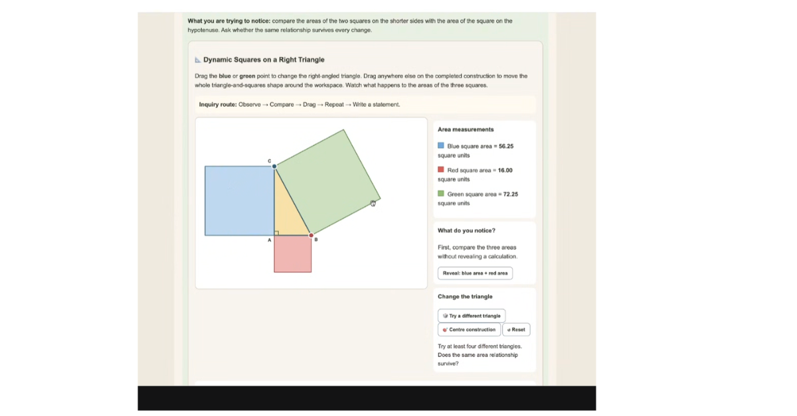

When Geometry Teaches Geography: On Light, Patience, and the Art of Industry

There are patterns that whisper beneath the surface of the world — if you listen with your eyes, you might hear them.
That’s how it felt listening to Gerry Docherty this morning as he shared his latest geometry module — triangles rotating like stained glass, colours breathing in rhythm, teaching not just that the angles add to 180°, but why they do. The hidden work beneath the visible symmetry — the unseen circle that makes the triangle move — is its own lesson in patience and beauty.
“Beware,” Gerry said, “when we seek perfection without patience, the pattern forgets to breathe.”
That line landed like a koan. A reminder that mathematics, like art or life, can suffocate if rushed toward mastery. Perfection requires space — a pause between the angles — for light to come through.
From Shipyards to Cloud Classrooms
We spoke then of geography, of time zones, and of how the lines of longitude twist and bend like stories — never quite straight, always human. Gerry’s father built ships on the Clyde. My own ancestors built families through long winters and wartime rations. They welded and wove, stitched and steered — industries that built the modern world by hand.
Now we sit here building code instead of ships, classrooms instead of engines. Our raw materials are no longer steel and rivets, but light, data, and patience. It’s a strange inheritance — what I called “industry evolution whiplash.” In just three generations, we’ve gone from furnaces and milk carts to GPUs and geometry engines. The rhythm of work has changed — faster, brighter, everywhere and nowhere at once.
And yet, the same principle holds:
The pattern only breathes when you let the light through.
The Craft of Time
As Gerry’s triangles rotated through their quiet proof, I thought of Tiffany glass — a thousand tiny pieces, each cut by hand, each bending the light differently. No piece perfect on its own, yet together, a cathedral. Geometry is like that. So is learning. So is life.
Our ancestors taught us precision. Our generation is relearning patience. The next may rediscover grace.
The art — whether in glass, in code, or in curriculum — is to hold the shape long enough for light to find it.
And perhaps that’s what this new industry truly is: not quaternary, nor quinary, but luminous. A world built not of matter, but of meaning. A geometry of care, held together by patience and light.
Join the conversation here.
Be part of the Novus Learning Network here
Visit our website here: https://buildingschoolsinthecloud.com/
First published in Building Schools in the Cloud on LinkedIn, 29 October 2025.